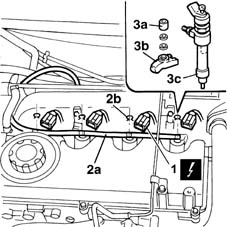

1060F10 fuel injectors
- Path
- Procedures > 10 ENGINE UNIT > 1060 DIESEL FUEL INJECTION > 1060F injectors and lines > 1060F10 fuel injectors
- Kind
- repair procedure (removal / refitting; the operation number is the code)
- Applies to
- engines: 1.9 JTD 8V; all production periods
- Interactive page
- https://sloeber94.github.io/elrnDB-fMltpl/en/#/2891402
Applies to: engines: 1.9 JTD 8V; all production periods
 Removing
Removing
 Refitting
RefittingOpen the bonnet lid.
1016A10 sound-proofing cover - r + r
1. Disconnect the electrical connections from the injectors.
 | Name | Connector |
|---|---|---|
1 | Injector |
2. Disconnect fuel return pipe (2a) for lubricating the injectors by removing clip (2b).
3. Undo bolts (3a), remove bracket (3b) and take out injectors (3c).

Applies to: engines: 1.9 JTD 8V; all production periods
Refitting
RemovingCheck the injectors are in good condition.
Fit the injectors in their seats.
Fit the bracket and tighten the retaining nuts.
 | Fastening | Component | Ø | Value (daNm) |
|---|---|---|---|---|
- | - | INJECTORS(DIESEL) | M8 | 3 |
Fit the fuel return pipe for lubricating the injectors and secure it with its clips.
Connect the electrical connections to the injectors.
| Name | Connector |
|---|---|---|
- | Injector |
1016A10 sound-proofing cover - r + r
Close the bonnet lid.